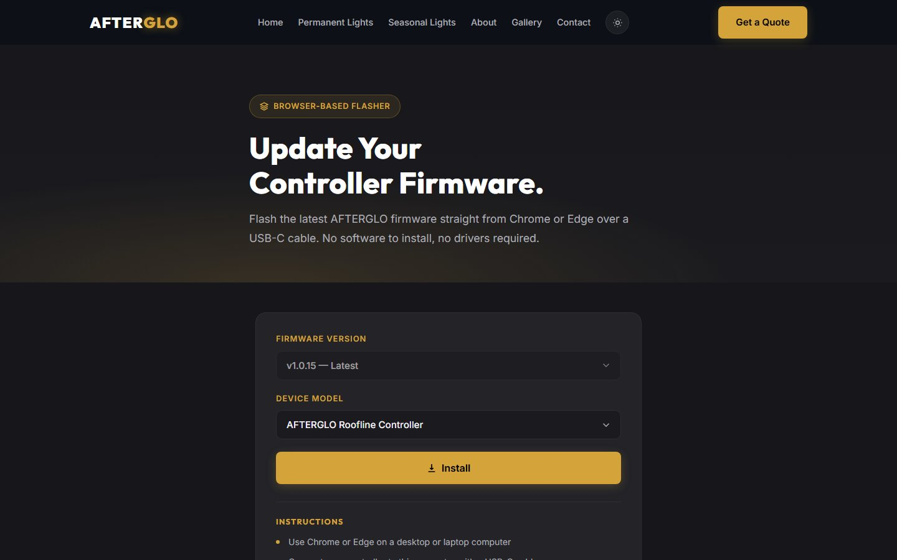
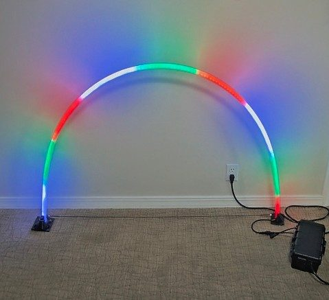
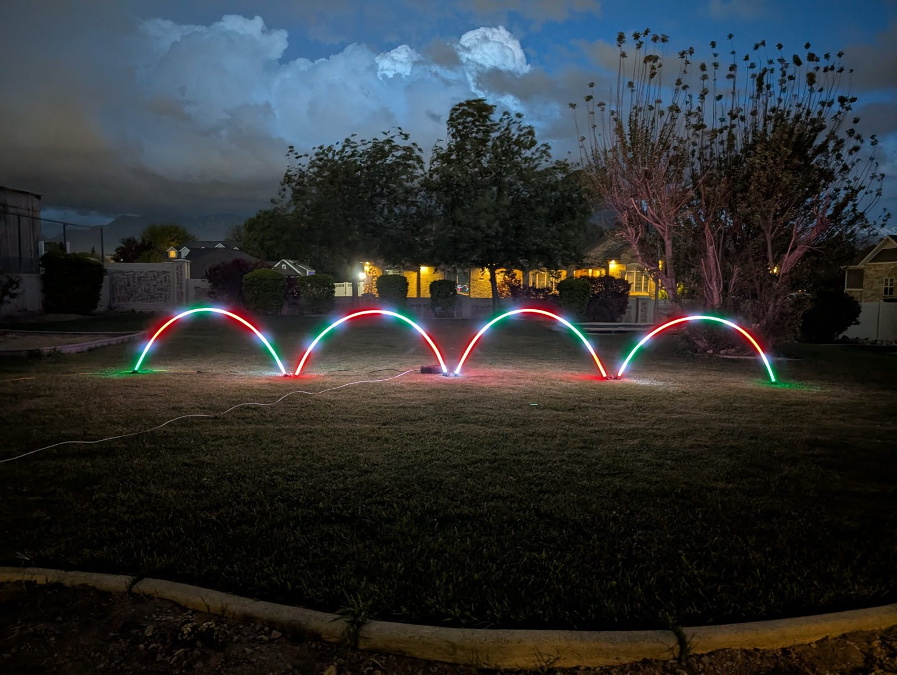

To be writtenFirmware: why fork WLED, and why replace it, in two sentences.

Rebranded WLED with OTA disabled. The scheduler was rewritten after a customer's lights wouldn't turn off: now simple on and off edges with a catch-up window, and the clock keeps itself synced over NTP without the app open.
Separate firmware for light arches on a WT32-ETH01: three zones with segments, 60+ presets, sunrise and sunset timers, and DDP for xLights and Falcon Player.
Written alongside the Flutter app. A versioned /api/v1, effects that run on the controller, the same 30 presets as the app, and 11 hardware-free tests.


To be writtenWhy OTA was off at first, and what the installer replaced.